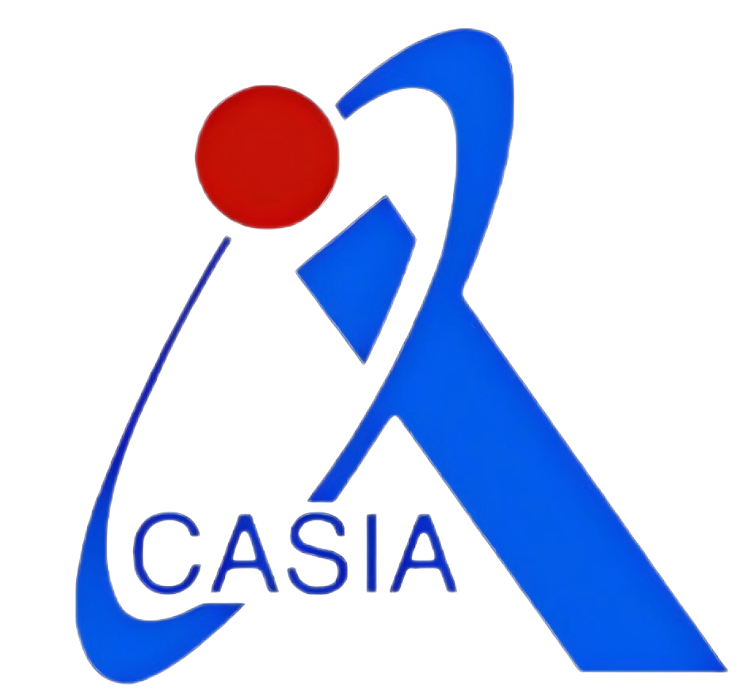
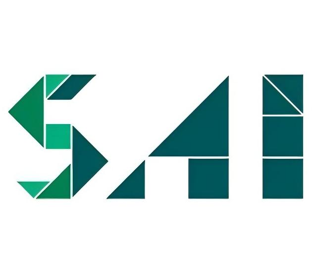

杨佳澍 (Jiashu Yang)
Hello, I'm Jiashu Yang (杨佳澍). My research interests focus on open-world visual understanding and large-scale foundation models (language, vision, and action), with a commitment to developing practical and deployable intelligent algorithms. In the realm of LLMs, I lead the open-source community Wenyuan Pavilion, dedicated to Chinese-culture-centered language models. Since 2023, I have been pursuing Computer Vision research supervised by Yian Zhao and Chaoran Feng. Additionally, I have been exploring LLMs mentored by Xuxin Cheng since 2024.
If you are interested in discussing or collaborating with me, please feel free to contact me via email.
2023.11 - 2025.09: Developed an eyeball system for embodied vision.
2024.05 - 2025.01: Research on multimodal document understanding with Prof. Huchuan Lu & Prof. Xu Jia.
📝 Publications
-
EvaGaussians: Event Stream Assisted Gaussian Splatting from Blurry Images
W Yu, C Feng, J Tang, Jiashu Yang, X Jia, L Yuan, Y Tian
ICCV 2025 | Paper -
Kongzi: A Historical Large Language Model with Fact Enhancement
J Yang, N Wang, Y Zhao, C Feng, J Du, H Pang, Z Fang, X Cheng
COLM 2026 (Under Review) | Paper -
Tune-Your-Style: Intensity-tunable 3D Style Transfer with Gaussian Splatting
Y Zhao, R Ye, R Zheng, Z Cheng, C Feng, J Yang, P Qiao, C Liu, J Chen
ICCV 2025 | Paper -
Breaking the Vicious Cycle: Coherent 3D-GS from Sparse & Blurred Views
Z Xu, C Feng, Y Li, J Zhao, J Yang, W Yu, L Yuan, Y Tian
TCSVT 2025 (Under Review) | Paper -
Look, Zoom, Understand: The Robotic Eyeball for Embodied Perception
J Yang, Y Han, Y Xie, N Guo, W Lian
ACMMM 2026 (Under Review) | Paper -
AutothinkRAG: Complexity-Aware Control of Retrieval-Augmented Reasoning for Image-Text Interaction
J Yang, C Zhang, A Wuerkaixi, X Cheng, C Liu, K Zeng, X Jia, X Cai
ACL 2026 (Under Review) | Paper -
Designing lead antiviral drugs for potential viral pandemics in future
X Che, Jiashu Yang, Q Liu, L Zhang, R Gani
Bioinformatics (Under Review) -
A survey of document understanding
Project Leader -
A survey of activate perception
Project Leader
📖 Education
- Sincerely looking for PhD positions for fall 2026 admission!
💻 Projects
-
DocThinker: All-in-One RAG - document parsing, graph RAG, and evaluation
DocThinker is a next-generation intelligent agent system designed to break the limitations of traditional RAG. It builds a structured, brain-like memory system using Knowledge Graphs. -
Wenyuan Pavilion: Ancient Chinese Language Community
I lead a research community focused on domain-specific models for Ancient Chinese and Literature. We have open-sourced various models and datasets to support scientific research and project implementation.
💼 Work Experience
-

2023.11 - 2024.08
Institute of Automation, Chinese Academy of Sciences (CAS) -
2024.05 - 2025.01
IIAU lab, Research Assistant -
2025.04 - 2025.07
ByteDance, Beijing, Applications of Large Language Models -

2025.07 - 2025.09
School of Artificial Intelligence, Shanghai Jiao Tong University, Research Assistant -
2025.12 - now
Meituan, Beijing, Longcat Interaction
🎖 Honors and Awards
- 2023: Robocup, Advanced Vision Track - Industrial Measurement, National First Prize
- 2024: Robocup, Advanced Vision Track - 3D Detection, National Third Prize
- 2024: Robocup, Advanced Vision Track - Industrial Measurement, National Third Prize
- 2024: China University Computer Competition, National Third Prize
About Life
🚧 This section is under construction... 🚧